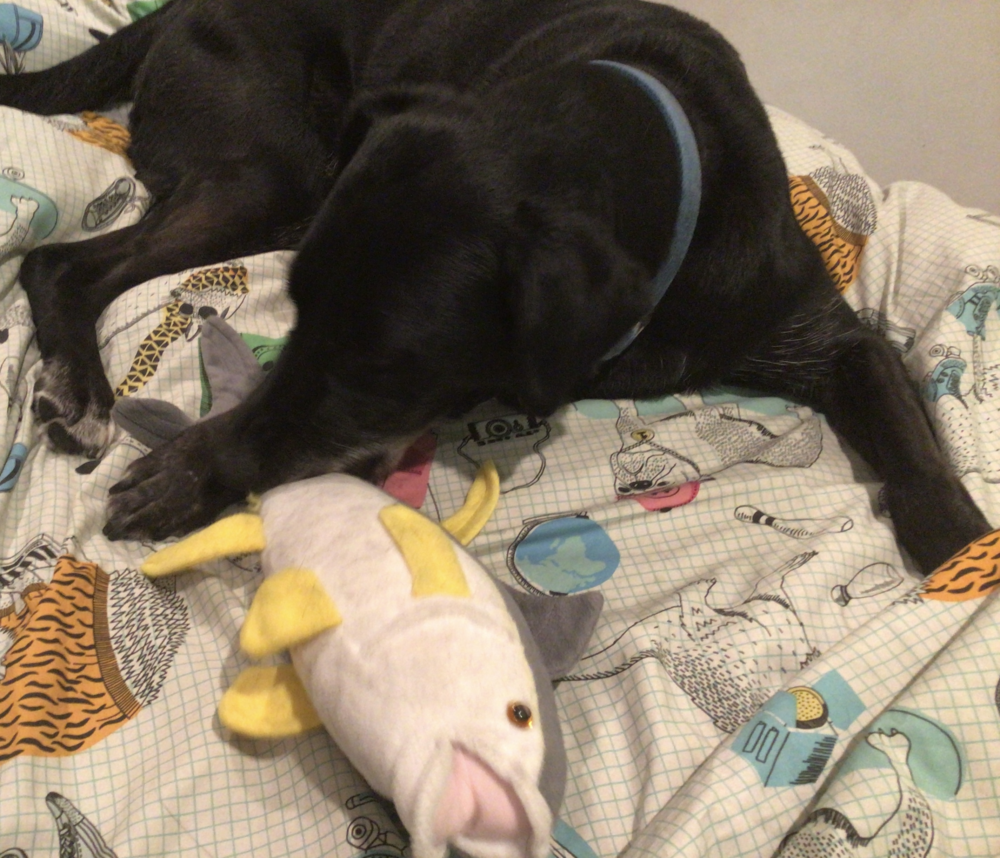

Home | My Friends | My Stuffies
I have 57 stuffies
Most are ocean animals. The ocean is pretty cool and stuff. These are the ones that my dog likes to eat:
1. Tyson the Tuna.

All Rights Reserved
as you can see my dog finds him highly edible
2. Loeber

All Rights Reserved
Loeber has also been a historic favorite of my pets; However, they are not as aggressive with it as with the other stuffies